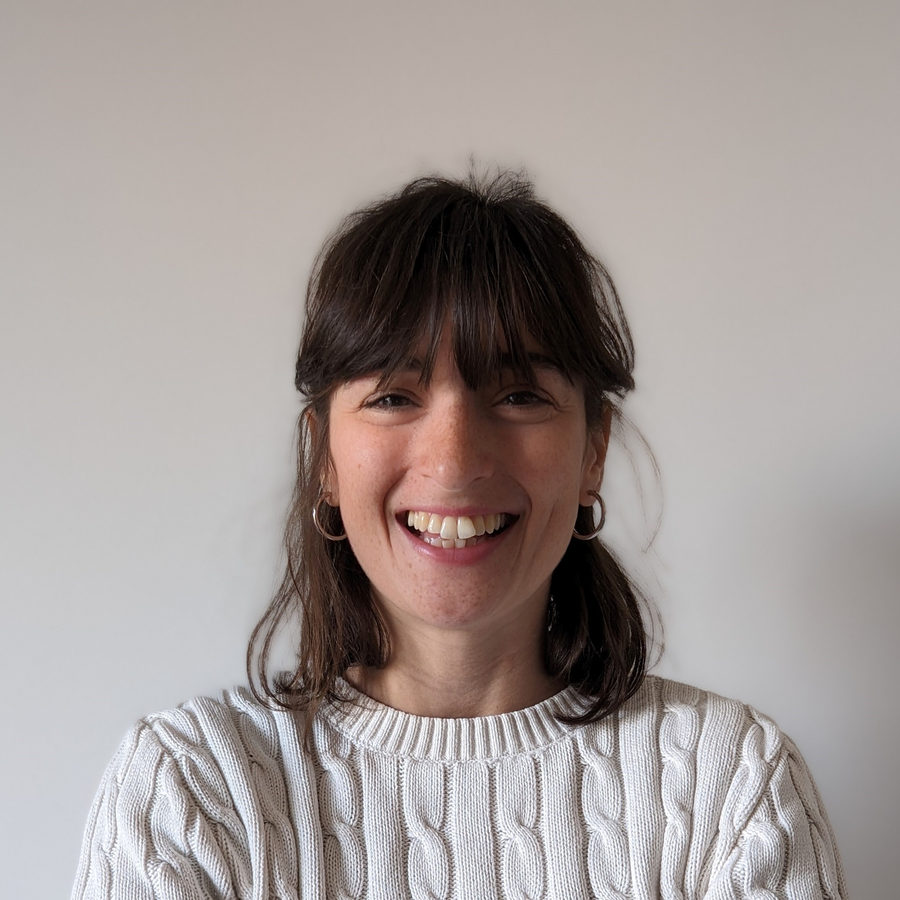

Chi sono
Sono psicologa e psicoterapeuta.
Lavoro con adulti e coppie, a Catania e online.

Formazione
Titoli e iscrizione
- Laurea magistrale in Psicologia Clinica, Università di Torino
- Specializzazione in psicoterapia sistemico-relazionale, Centro Milanese di Terapia della Famiglia
- Iscritta all'Ordine degli Psicologi della Regione Siciliana, n. 9125
L'approccio
Guardare alla persona dentro le sue relazioni.
Ognuno di noi vive dentro una rete di legami: partner, famiglia, amici, lavoro. Quello che accade in questi legami influenza come stiamo.
Per questo, anche nella terapia individuale, si guarda alle relazioni in cui si vive.
Con chi lavoro
Adulti e coppie.
Adulti, in un percorso individuale, e coppie. Per bambini e adolescenti indirizzo a colleghi del territorio.